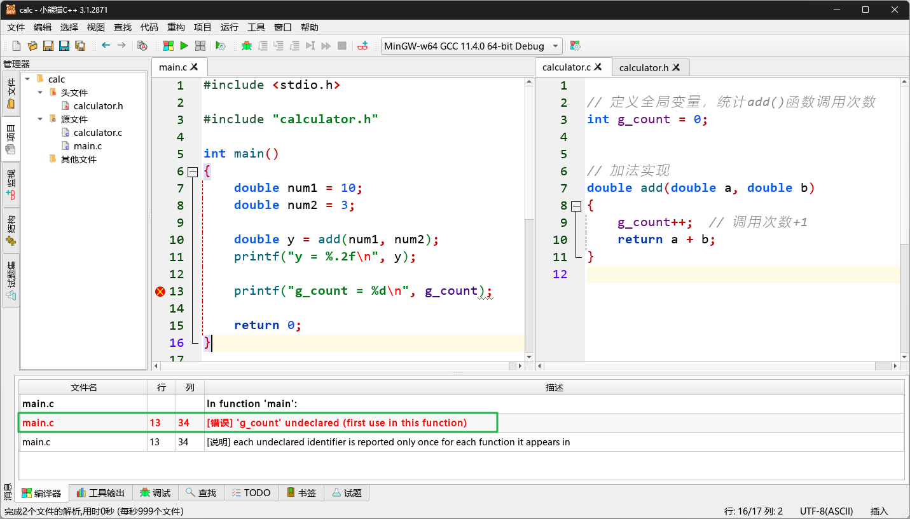
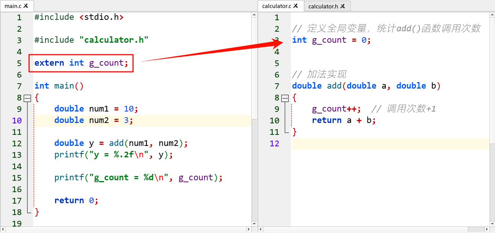
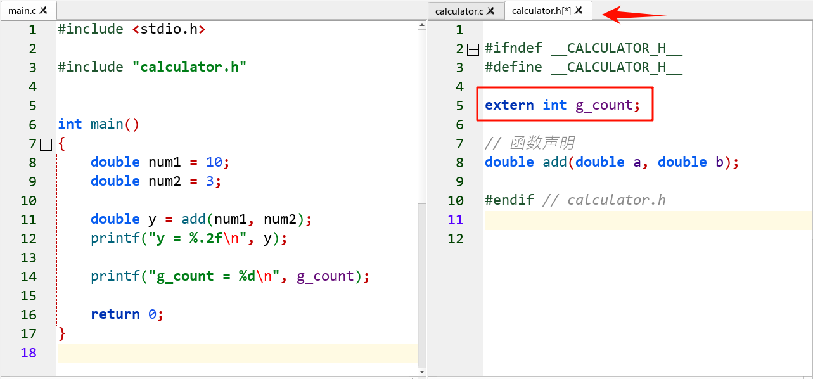
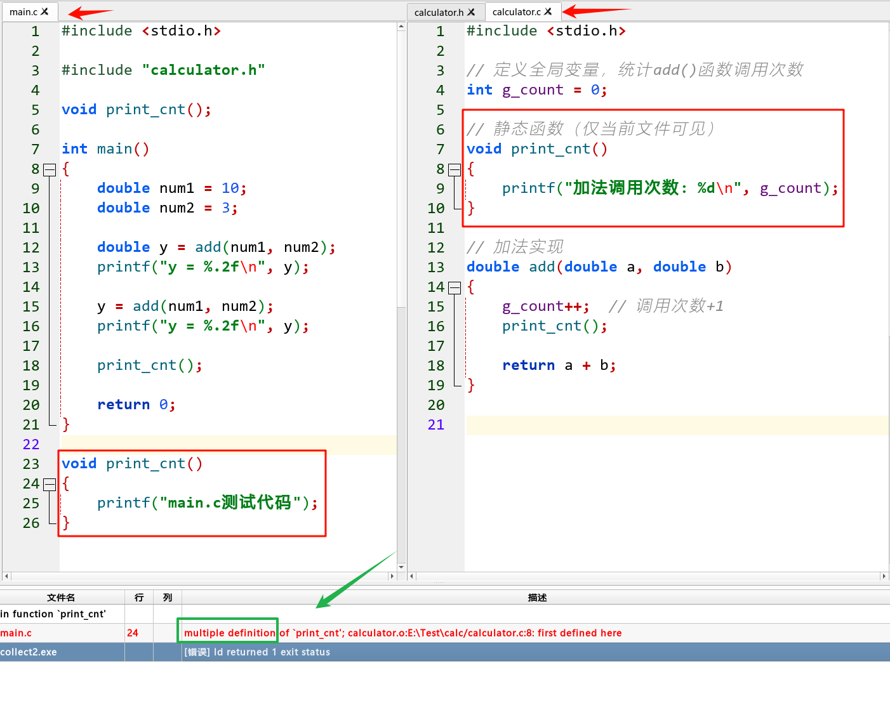
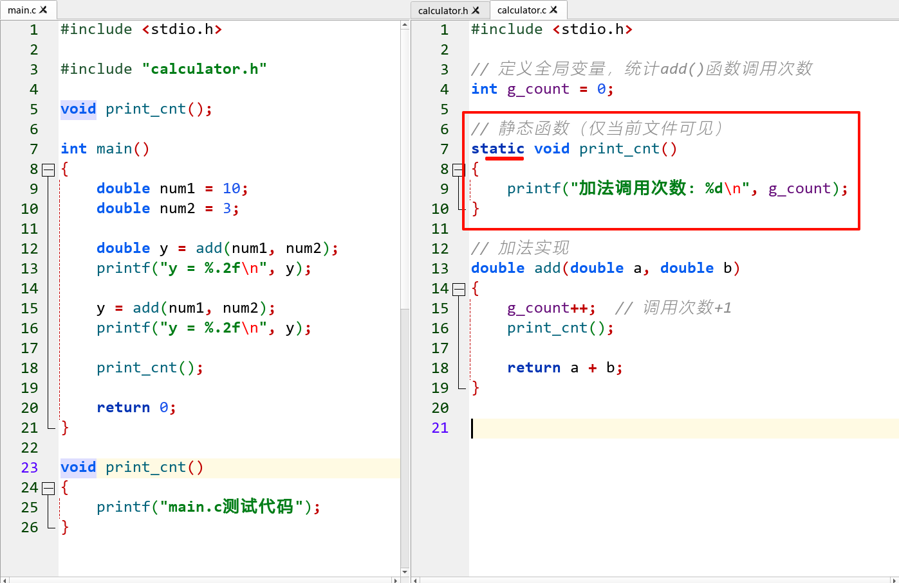
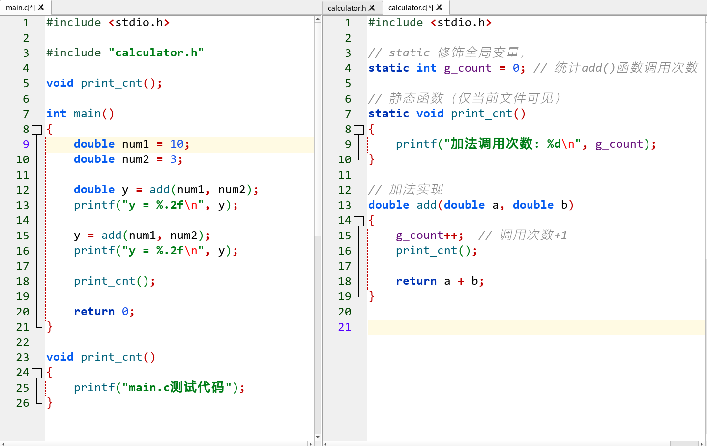
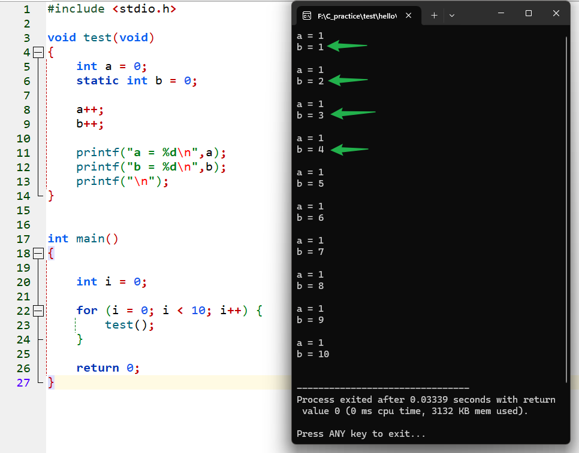
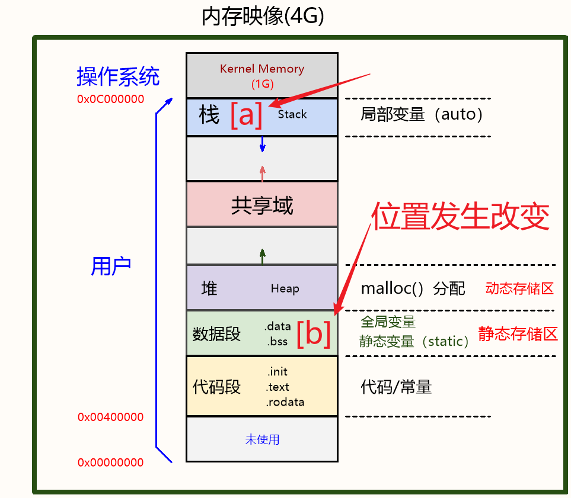

<!DOCTYPE lake>
<a class="yuque-card-link" href="https://cdn.nlark.com/yuque/0/2024/jpeg/43021193/1732073368750-c637c6de-1846-480b-a066-18bccb0b7fee.jpeg" rel="noopener noreferrer" target="_blank">board：board</a><hr/><h1 data-lake-id="Efltv" id="Efltv"><span data-lake-id="uaef22881" id="uaef22881">1&gt; extern </span></h1><h2 data-lake-id="LFEjs" id="LFEjs"><span data-lake-id="u7efbe372" id="u7efbe372">1.1&gt; 功能需求</span></h2><p data-lake-id="u5f656ff3" id="u5f656ff3"><span data-lake-id="ueaec0b07" id="ueaec0b07">定义全局变量g_count统计，add()函数的调用次数；</span></p><p data-lake-id="u193e110c" id="u193e110c"><span data-lake-id="u09ff6030" id="u09ff6030">​</span><br/></p><p data-lake-id="u489255b2" id="u489255b2"><span data-lake-id="ua7b947a8" id="ua7b947a8">程序设计：</span></p><p data-lake-id="u176e1c17" id="u176e1c17"></p><p data-lake-id="ua606b58b" id="ua606b58b"><span data-lake-id="uc61be9d8" id="uc61be9d8">运行结果：</span></p><p data-lake-id="uc591c99d" id="uc591c99d"><span data-lake-id="ua7c32ca8" id="ua7c32ca8" style="color: #DF2A3F">[错误]</span><span data-lake-id="ua3bd365f" id="ua3bd365f"> 'g_count' undeclared (first use in this function)， 全局变量</span><code data-lake-id="u2f2b711c" id="u2f2b711c"><span data-lake-id="u81db9475" id="u81db9475" style="color: #DF2A3F">g_count</span></code><span data-lake-id="u4cdaf4a6" id="u4cdaf4a6"> 没有声明，不认识这个符号！</span></p><hr/><h2 data-lake-id="N9joV" id="N9joV"><span data-lake-id="u45334dba" id="u45334dba">1.2&gt; extern扩展全局变量作用域</span></h2><p data-lake-id="uc1e5020d" id="uc1e5020d"></p><p data-lake-id="ueea250ac" id="ueea250ac"><span data-lake-id="u2c857ca9" id="u2c857ca9">"</span><strong><span class="lake-fontsize-14" data-lake-id="ua630f34b" id="ua630f34b" style="color: #2F4BDA">extern</span></strong><span data-lake-id="u9cbdae70" id="u9cbdae70"> 告诉 main.c：</span><code data-lake-id="u077dbe0d" id="u077dbe0d"><span data-lake-id="uc10caeef" id="uc10caeef" style="color: #DF2A3F">g_count</span></code><span data-lake-id="u653ec81d" id="u653ec81d">已在别处定义，申请好空间了，放心用！"</span></p><hr/><p data-lake-id="u0d1270b8" id="u0d1270b8"><span data-lake-id="u8bd4132d" id="u8bd4132d">规范写法：通常在.h中声明，.c中定义</span></p><p data-lake-id="u2aba2ecd" id="u2aba2ecd"></p><p data-lake-id="uc7c166e2" id="uc7c166e2"><span data-lake-id="u80142d6c" id="u80142d6c">​</span><br/></p><hr/><h2 data-lake-id="KUZsS" id="KUZsS"><span data-lake-id="uaab75384" id="uaab75384">1.3&gt; extern扩展函数</span></h2><span class="yuque-card-unsupported">[codeblock]</span><p data-lake-id="ud96ed3f4" id="ud96ed3f4"><span data-lake-id="ubca3aebd" id="ubca3aebd">函数声明默认就是 extern，不用写！</span></p><p data-lake-id="u5471693a" id="u5471693a"><span data-lake-id="u2365fbc3" id="u2365fbc3">但变量必须显式写 extern 声明</span></p><hr/><h1 data-lake-id="Rt34b" id="Rt34b"><span data-lake-id="u97072c10" id="u97072c10">2&gt; static作用</span></h1><h2 data-lake-id="JSJpQ" id="JSJpQ"><span data-lake-id="u874fb99b" id="u874fb99b">2.1&gt; 限制函数作用域</span></h2><h3 data-lake-id="KchnJ" id="KchnJ"><span data-lake-id="u84bf1282" id="u84bf1282">2.1.1&gt; 功能需求</span></h3><p data-lake-id="uc5193db9" id="uc5193db9"><span data-lake-id="ucbf5bad0" id="ucbf5bad0">当我们在编写大型程序时，可能会出现2个函数名相同时候，好比出现2个相同名字的人</span></p><p data-lake-id="u32b7ae67" id="u32b7ae67"><span data-lake-id="u170b9302" id="u170b9302">这时候会报警“</span><strong><span data-lake-id="u8ddefad5" id="u8ddefad5" style="color: #DF2A3F">multiple definiton</span></strong><span data-lake-id="u5987ed5a" id="u5987ed5a">”重复定义，怎么办？</span></p><p data-lake-id="u02829cfe" id="u02829cfe"></p><h3 data-lake-id="XLLT6" id="XLLT6"><span data-lake-id="u415eb0be" id="u415eb0be">2.1.2&gt; static 限制函数作用域</span></h3><p data-lake-id="ub432aaf2" id="ub432aaf2"><span data-lake-id="u49d80861" id="u49d80861">❓</span><span data-lake-id="ubccecb9c" id="ubccecb9c">问题：如何避免函数被外部文件误用或重复定义？</span></p><p data-lake-id="u0b1c6913" id="u0b1c6913"><span data-lake-id="u15054aab" id="u15054aab">方法1：改函数名（可行，但不够优雅）</span></p><p data-lake-id="ud3e1fe1d" id="ud3e1fe1d"><span data-lake-id="ud9452ada" id="ud9452ada">方法2（推荐）：使用 static 关键字：</span></p><p data-lake-id="uc8eafb7f" id="uc8eafb7f" style="text-indent: 2em"><span data-lake-id="u6ab4984a" id="u6ab4984a" style="color: #2F4BDA">私有化函数</span><span data-lake-id="u0acb7c23" id="u0acb7c23">：static void print_cnt() 只能在当前 .c 文件内使用，外部无法调用；</span></p><p data-lake-id="ub1bb6611" id="ub1bb6611" style="text-indent: 2em"><span data-lake-id="u137af501" id="u137af501" style="color: #2F4BDA">避免命名冲突</span><span data-lake-id="uff193559" id="uff193559">：其他文件可以定义同名函数，不会引发重复定义错误；</span></p><p data-lake-id="uc0af1400" id="uc0af1400" style="text-indent: 2em"><span data-lake-id="u26273fd5" id="u26273fd5" style="color: #2F4BDA">代码可读性</span><span data-lake-id="uf63aa492" id="uf63aa492">：开发者一看到 </span><code data-lake-id="u8acc5a85" id="u8acc5a85"><span data-lake-id="ue88923c0" id="ue88923c0">static</span></code><span data-lake-id="u274ca918" id="u274ca918">，就知道该函数仅供内部使用，就不操心细节了；</span></p><p data-lake-id="uaf0ebc1f" id="uaf0ebc1f"></p><hr/><h2 data-lake-id="yTZom" id="yTZom"><span data-lake-id="udb394546" id="udb394546">2.2&gt; 限制全局变量作用域</span></h2><p data-lake-id="ufd6b3062" id="ufd6b3062"><span data-lake-id="u2282b773" id="u2282b773">当</span><code data-lake-id="u4d362d70" id="u4d362d70"><span data-lake-id="udeaea8d5" id="udeaea8d5" style="color: #2F4BDA">g_count</span></code><span data-lake-id="u031ec04c" id="u031ec04c" style="color: #000000">在其他文件中不需要时，也可以私有化，避免命名冲突；</span></p><p data-lake-id="ubfea7622" id="ubfea7622"><code data-lake-id="uc7e6a97b" id="uc7e6a97b"><span data-lake-id="u680273cf" id="u680273cf" style="color: #2F4BDA">static</span></code><span data-lake-id="u950210d8" id="u950210d8"> 修饰全局变量时：</span></p><p data-lake-id="uf978f17b" id="uf978f17b"><span data-lake-id="u2f01b0b1" id="u2f01b0b1">该变量的作用域被限制在定义它的源文件（calculator.c文件）内部，其他文件无法直接访问。</span></p><p data-lake-id="ub37a6cd3" id="ub37a6cd3"></p><p data-lake-id="udd3e36ce" id="udd3e36ce"><span data-lake-id="u2e62b1b0" id="u2e62b1b0">做个比喻:</span></p><p data-lake-id="u054a0db6" id="u054a0db6"><span data-lake-id="u216cb8b4" id="u216cb8b4">5班 和 6班 各有一个学生叫 </span><span data-lake-id="ud953c278" id="ud953c278" style="color: #DF2A3F">大张伟</span></p><p data-lake-id="u79df26f2" id="u79df26f2"><span data-lake-id="ue23542ca" id="ue23542ca">默认情况下（无 static），全校点名时会发生混乱（同名冲突）</span></p><p data-lake-id="u3be5dbb7" id="u3be5dbb7"><span data-lake-id="uf861b012" id="uf861b012">static 的作用：给名字加上班级前缀，变成 "5班的</span><span data-lake-id="u10cc5765" id="u10cc5765" style="color: #601BDE">大张伟</span><span data-lake-id="uaef38dd8" id="uaef38dd8">👳</span><span data-lake-id="u00810032" id="u00810032">" 和 "6班的</span><span data-lake-id="uea98b231" id="uea98b231" style="color: #D22D8D">大张伟</span><span data-lake-id="u104f1594" id="u104f1594">⛹️</span><span data-lake-id="udc490d68" id="udc490d68">"</span></p><hr/><h2 data-lake-id="Zym5d" id="Zym5d"><span data-lake-id="ud23c38ae" id="ud23c38ae">2.3&gt; 改变局部变量为静态局部变量</span></h2><p data-lake-id="u17e0ab98" id="u17e0ab98"></p><ul list="udddd53ee"><li data-lake-id="u0d135503" fid="ua2e1aad4" id="u0d135503"><span data-lake-id="u8a1bfcc5" id="u8a1bfcc5">存储性</span></li></ul><p data-lake-id="uf517652d" id="uf517652d"><span data-lake-id="u3c4bc0e7" id="u3c4bc0e7">局部变量b被static修饰后，存储位置就会从栈中改变到静态存储区；<br/></span><span data-lake-id="uca19dba0" id="uca19dba0">那它的生命周期就会变成整个程序运行期间，而不是函数调用后撤销；</span></p><ul list="ua71c6b1a"><li data-lake-id="u1377f94d" fid="u5725d18a" id="u1377f94d"><span data-lake-id="u5c22a849" id="u5c22a849">静态局部变量只会被初始1次；</span></li><li data-lake-id="u78cb235e" fid="u5725d18a" id="u78cb235e"><span data-lake-id="u438d1b4e" id="u438d1b4e">静态局部变量的作用域仍然是定义它的函数内部。</span></li></ul><p data-lake-id="u470596b7" id="u470596b7"></p>